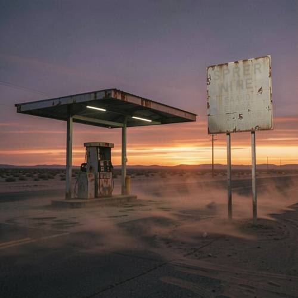
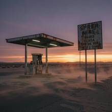
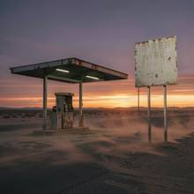

Style — At dusk, an abandoned gas station stands alone beside the desert road.
At dusk, an abandoned gas station stands alone beside the desert road. The wind and sand blowing against the rusty signs, presenting the bleak style of a road movie.


Judge — Direct
- PASSStyle — The image portrays an old, seemingly abandoned gas station in a vast desert landscape during dusk. The structure is visibly weathered with rust and peeling paint. The setting, with its cracked asphalt road, distant mountains under a twilight sky, and overall sense of desolation, effectively conveys a bleak and isolated atmosphere typical of a road movie aesthetic.
- FAILAction - State — The image is a still photograph. While the environment is sandy, there is no visual indication of wind or sand actively blowing. The air appears clear, and there is no motion blur or suspended particles to suggest movement.
Judge — Continuum
- PASSStyle — The image presents a desolate scene of an abandoned gas station in a desert environment at dusk. The color palette, featuring warm sunset hues against a dark purple sky, combined with the isolated and decaying subject matter (rusty gas pump, canopy, and sign), evokes a sense of loneliness and the passage of time. This composition and mood align with the bleak, cinematic aesthetic characteristic of a road movie.
- PASSAction - State — In the foreground and middle ground, there are visible clouds and streaks of sand and dust swirling across the asphalt road and desert floor. The depiction of this movement indicates the presence of wind actively blowing the sand through the scene.
What the agent did
Thinking
The user wants an image of an abandoned gas station at dusk beside a desert road, with wind and sand, rusty signs, bleak road-movie style. Use flux2-klein, generate, inspect, edit, mark best.
Step 1 — `generate_image`
{
"model": "flux2-klein",
"prompt": "Cinematic wide shot at dusk: an abandoned gas station stands alone beside an empty desert highway. A single rusty fuel pump under a sagging metal canopy, a tall weathered road sign with faded peeling lettering, rust streaks and flaking paint. Wind-blown sand streaks horizontally across the frame, dust swirling around the pumps. Deep purple-orange twilight sky with the last band of sunset on the horizon, long shadows, desaturated bleak color grade like a road movie, 35mm film grain, moody atmospheric cinematography."
}Result img_0

Thinking
The image looks quite good: dusk, abandoned gas station, rusty canopy and sign, blowing sand, desert road, bleak road-movie mood. The sign text is garbled ("SPRER WIRE..."). The prompt didn't ask for specific text, so garbled text could be seen as weathered/faded lettering, which actually fits "faded peeling lettering." But it's readable-ish gibberish, which may look off. Options: make the sign lettering more faded/worn so gibberish reads as weathered, or fix text to something like "GAS" / "LAST GAS". The user's prompt didn't specify text. A faded sign with illegible worn letters fits the abandoned theme. I could edit to make the letters heavily faded and peeling so they read as weathered rather than gibberish. Also the composition shows a road, sand blowing, dusk sky — all good. Let me mark best first, then try one edit to fade the sign lettering.
Step 2 — `mark_best`
{
"image": "img_0",
"reason": "Strong first result: dusk twilight sky, rusty canopy and pump, blowing sand, desert road, bleak road-movie mood all present."
}Step 3 — `edit_image`
{
"image": "img_0",
"model": "flux2-klein",
"prompt": "Make the lettering on the tall road sign heavily faded, peeled and weather-worn so only faint ghost traces of letters remain on the rusted metal, as if decades of sandstorms have scoured it nearly blank."
}Result img_1

Thinking
The edit worked well — the sign lettering is now ghosted and weather-worn, which fits the abandoned theme much better than readable gibberish. The rest of the scene is preserved: dusk sky, rusty canopy, pump, blowing sand. This is good. Mark img_1 as best and stop.
Step 4 — `mark_best`
{
"image": "img_1",
"reason": "Sign lettering now weathered to faint ghosts, fitting the decades-abandoned theme; rest of the composition (dusk sky, rust, blowing sand) preserved intact."
}Thinking
Done. Summarize for the user.
Model
The image is complete and marked as the final result. **What it captures:** - **Dusk atmosphere** — a purple-to-orange twilight gradient with the last band of sunset on the horizon - **Abandoned gas station** — a lone rusty pump under a sagging, rust-streaked metal canopy beside an empty desert highway - **Weathered signage** — the tall road sign's lettering is scoured to faint ghost traces, as if decades of sandstorms erased it - **Wind and sand** — dust streaming horizontally across the frame, swirling around the pump island - **Bleak road-movie mood** — desaturated color grade, long shadows, desolate landscape stretching to distant mesas The scene is fixed in that quiet, forsaken moment just before dark — exactly the lonely, cinematic feel of a road movie still.